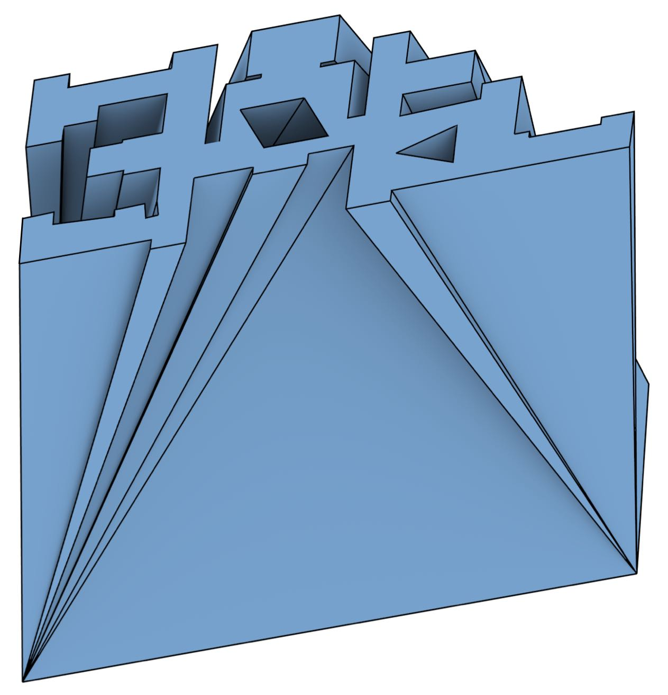

Chapter 6 and 7 presented in detail two low-level construction algorithms for \(n\)D objects, both of which operated on level of individual primitives. These are valuable in their own right, but in order to ease the use of higher-dimensional operations in practice, it is necessary to develop high-level operations based on them which can actually be used by practitioners. This chapter thus describes at a conceptual level how one such high-level operator can be defined, which creates a 4D representation from a series of existing 3D representations at different levels of detail.
The chapter starts by introducing some background in §8.1, explaining the motivation behind such an operation and covering the principles of linking operations with 2D/3D objects. §8.2 describes four linking schemes that can be used to construct 4D models from a set of 3D objects, discussing the advantages and disadvantages of each method in terms of their feasibility in practice and of the properties that the 4D model would have. §8.3 presents several use cases to demonstrate how the different schemes result in objects with different characteristics, where the best scheme can be considered to be application-dependent. §8.4 shows a concrete example in detail, implementing a use case that combines most of the linking schemes from §8.2. §8.5 concludes the chapter with a discussion of the further possibilities of this method.
Most of this chapter is based on the paper:
{% imbiber pubs/phd.bib one:15ijgi noimg %}
8.1 Motivation and background
3D city models of the same region are often created at multiple levels of detail (LODs). For instance, in the CityGML standard [Gröger et al., 2012] five discrete LODs are defined (Figure 3.23), which range from the 2D footprint of the building up to a representation where the windows, doors and walls and even indoor objects are all modelled in detail. This allows a user to choose the most appropriate LOD for a given application, balancing the better results that are obtainable using more detailed models with the higher computational requirements that are necessary to obtain them [Biljecki et al., 2014b].
However, the creation of these models is a complex task that needs to be performed continuously, as 3D city models need to be kept up to date [Zlatanova and Holweg, 2004; Kolbe et al., 2005]. Given the large size and complexity of current 3D city models, it can be very beneficial to have incremental updates to a model which affect only a building and its immediate surrounding area [Döllner et al., 2006]. These can take place as buildings and other city objects (e.g. roads, utility infrastructure, city furniture, etc.) are built, modified and destroyed.
In order to apply such incremental update processes to 3D city models at multiple LODs, links between related objects are crucial. Given an object at a certain LOD, links usually point to its incident and adjacent objects at the same LOD (i.e. the topological relationships that are most common in GIS), as well as to its corresponding objects at other LODs, even when these objects are of different dimension (e.g. when a thin polyhedron in a higher LOD is collapsed to a polygon in a lower LOD). These links can then be used to propagate changes to other LODs [van Oosterom and Stoter, 2010] or to apply consistency checks to new or newly altered objects [Gröger and Plümer, 2011b], among other operations that are part of a robust update process.
In theory, a series of LODs might be derived from an automatic generalisation process [Weibel, 1997] and thus the exact correspondences between objects can be already known, but as discussed in §3.4, fully automatic 3D generalisation is very complex and has not yet been achieved in practice. The different LODs of a model are therefore usually acquired independently, collected with different techniques, often for different purposes, and thus the resulting representations do not necessarily have easy-to-identify correspondences. The same object can be slightly displaced at different LODs, an object can be an aggregate of other objects (think of a terraced house: either each house is individually represented as a volume or one single volume is used for the whole row), or can be modelled in an entirely different way. In fact, as shown in Figure 8.1, it is possible that there are no common geometries (i.e. 0-, 1-, 2-, or 3-cells with the same geometry) across a series of models at different LODs.
In order to join multiple separate representations, stored as independent datasets, it is therefore first necessary to find the correspondences between (equivalent) objects at different LODs. As described in 2D by Hampe et al. [2003], when an automatic generalisation process is used, the objects can be directly linked as they are being generalised. Otherwise, the correspondences must be inferred. In 2D, they are usually inferred using map matching methods, which can take into account the geometry [Veltkamp and Hagedoorn, 2001], topology and semantics of and between the objects [Devogele et al., 1996]. Devogele et al. [1996] does this in three steps: (1) manually finding correspondences between semantic classes; (2) resolving conflicts; and (3) matching objects using geometry, topology and semantics. Zhang et al. [2014] matches features by computing a compatibility coefficient, derived from the similarity in their geometry and that of their neighbours.
After the correspondences have been found, the corresponding representations of an object are linked together. These links across LODs usually take the form of common IDs at the 2D or 3D object level. However, more advanced linking structures developed for this exact purpose do exist and are often used in 2D—some of these were mentioned in §3.4: hierarchical planar subdivisions [Filho et al., 1995], multi-scale partitions [Rigaux and Scholl, 1995], nested maps [Plümer and Gröger, 1997] and topological generalised area partitioning trees [van Oosterom, 2005].
8.2 Suggested methodology and current issues
The methods used to identify correspondences between 2D objects and the data structures used to store these correspondences, mentioned in §8.1, do not readily extend to higher dimensions. While map matching methods can identify (to a limited extent) the correspondences between 2D or 3D objects, they do not take into account the lower-dimensional correspondences between the 0D–2D cells bounding them. Linking corresponding objects using only common IDs at the 2D or 3D object level is similarly problematic, as it is difficult to store complex correspondence relationships, such as an aggregation of multiple objects into one [Biljecki et al., 2014b], or those connecting the points, line segments and polygons on the boundary of corresponding 2D or 3D objects.
Based on the higher-dimensional data structures presented in Chapter 4, this section presents a sketch of a dimension-independent approach. By considering the LOD of a model as a fully independent dimension in the geometric sense [van Oosterom and Stoter, 2010; Paul et al., 2011; Stoter et al., 2012a], it is possible to store all topological relationships between any related objects across all LODs. A set of connected 2D polygons at multiple LODs are modelled as a single 3D polyhedron117, as is shown in Figure 8.2, and a set of connected 3D polyhedra at multiple LODs are modelled as a single 4D polychoron. Notably, the correspondences between equivalent objects across LODs thus become geometric primitives, making it possible to perform geometric operations with them (e.g. extracting an intermediate LOD for visualisation purposes) or to attach attributes to them (e.g. the meaning of these correspondences), just as is done to other geometric primitives.
In the specific case of a 4D (3D space+LOD) model, a set of 4D objects is modelled as a 4D cell complex embedded in 4D space, where there is an additional LOD axis \(l\) and a point in 4D space is defined by a tuple of coordinates \((x,y,z,l)\). It is worth noting that this implies that the LOD axis should be properly parametrised, defining quantifiable values for every fixed LOD in a model, or alternatively a function that does so.
The 4D space thus defined is filled with a set of non-overlapping polychora, in which a 3D object (e.g. a building) at all of its different LODs is represented as a single 4D object. This 4D object is bounded by a set of volumes, two of them being the object at its lowest and highest LOD, and several lateral ones formed by filling the space between corresponding faces across LODs. When a 3D cross-section is extracted from it (Chapter 9), these respectively correspond to the volumes and bounding faces of an extracted 3D model.
A 4D model is constructed from a series of existing LODs of a 3D city model in three steps:
- identifying corresponding 0D–3D cells;
- linking them by creating 1D–4D cells connecting them;
- using the incremental construction algorithm of Chapter 7 to build a 4D cell complex using all 0D–4D cells.
This section describes various methods to identify corresponding cells in different LODs of a 3D object (§8.2.1), and then presents four linking schemes to construct a 4D model (§8.2.2). As §8.3 demonstrates, the 4D cells created by the linking schemes are used to construct 4D cell complexes with different properties and shapes.
8.2.1 Step 1: Identifying corresponding cells in 3D models
Constructing a 4D model from a sequence of 3D models largely depends on the identification of the corresponding 0-, 1-, 2-, and 3-cells between these 3D models. The aim of this identification is to create a mapping between the 3D models that preserves the topological relationships between the elements in the models so as to create a valid 4D model.
Considering 3D models at different LODs, this identification will often result in matching cells of different dimensions, commonly with some cells in the 3D model at the highest LOD being matched to cells of lower dimension in the 3D model at the lowest LOD . Also, these correspondences will often not result in a one-to-one mapping: groups of adjoining cells in one model, most often in the one at the highest LOD, will commonly be matched to a single cell in the other model.
The identification of matching cells should be done using a combination of the following, arguably in order of preference:
-
Attributes Using the semantic information stored in the cells, when it is available. For instance, matching two cells that are known to be equivalent through the use of IDs, or if knowledge is kept during the generalisation process, matching a cell with one that is known to be a simplified version of it.
-
Topology When there is an isomorphism between two cells (§5.1.1) that additionally preserves all the topological relationships between them (such as the facet/ridge comparisons used in Chapter 7), the isomorphism between two cells already gives a matching between them, although it might be important to check that the isomorphism is compatible with the matching of the other cells in the model and with some geometric constraints (e.g. a maximum distance between matched cells). Relevantly and as used elsewhere in this thesis, Gosselin et al. [2011] describe how to whether two cells or maps are isomorphic in any dimension. Another more complex possibility is using subgraph isomorphism on unmatched portions of a generalised map [Eppstein, 1999]. The latter option should lead to partial matches and thus better results, but this problem is known to be NP-complete and so it is unlikely to be applicable to large datasets.
Another relevant way to use topology is to use the topological relationships between cells in order to iteratively infer matchings for the cells that remain unmatched after applying some other algorithm [Hampe et al., 2003]. Such a case is explained more concretely in the example of Figure 8.5.
-
Geometry Using geometric computations, such as those based on computing similarity metrics, simply matching unmatched cells in one model to their nearest neighbour in another model, or attempting to minimise the Earth Mover’s Distance (EMD) [Rubner et al., 1998] between them. It is however important to compute these matches using constraints that generally preserve the relative positions and topological relationships between the cells. For instance, a greedy algorithm could match cells iteratively, cascading these matches to adjacent cells (in all models) or rejecting matches that would violate a geometric or topological constraint.
Another possibility to assist when matching cells is to allow splitting an \(i\)-cell into multiple \(i\)-cells by adding cells of lower dimensions in a manner that does not alter the geometry of the cell. This effectively loosens the requirement that two cells be isomorphic by modifying their topology, creating a one-to-one mapping between the two cells. For instance, a face can be split into multiple faces by adding a vertex in its interior and creating edges that link it to some of the vertices of the face118.
Holes deserve a special mention, as they can also be used to decide how to match cells. When holes (of any dimension) are present at a higher LOD but disappear at the immediate lower LOD, they can be handled appropriately by collapsing them to a nearby vertex such that they do not create any geometric intersections between the cells. Another option would be to create an additional point at an appropriate location in the lower LOD119 where it can be collapsed. When holes are present in multiple LODs, they should be handled essentially as if they were independent cells, either matching them directly, splitting them, or collapsing parts of them to match each other.
8.2.2 Step 2: Linking corresponding cells
Based on the matches that were found between cells, which mathematically define a map between the 3D cell complexes of the 3D models, they are then linked to construct a 4D cell complex. For this, it might be necessary to create or modify 0D–3D cells in the input cell complexes, as well as to create new 1D–4D cells that lie between the 0D–3D cell complexes. The resulting 4D cell complex is then embedded in 4D space by assigning new 4D coordinates for every point. These 4D points are simply the union of all those in the input 3D cell complexes with an appended coordinate that refers to the LOD of their originating model. Four different basic linking schemes are proposed here, which are shown in Figure 8.3.
(a) Simple linking
(b) Unmatched are collapsed
(c) Modification of topology
(d) Matching all to existing
Figure 8.3: The four linking schemes for three LODs of a house, here depicted in 2D. The objects that would obtained by slicing between the LODs can be seen in dashed green contours; the red dashed lines reflect the cells that need to be added and split in order to ensure a valid 3D (2D+LOD) cell complex.↩
Method 1: Simple linking of corresponding cells
Links are constructed between the corresponding cells of an object at two different LODs, and if a cell has no corresponding cell then it is ignored. While this makes it possible to easily construct a 4D cell complex in the cases where all cells in the lower LOD model have a corresponding cell in the higher LOD model, when this is not the case, the result will consist of an incomplete 4D cell complex—possibly without any 4-cells.
To ensure a complete one, cells often need to be split (e.g. those separated by the red dotted line in Figure 8.3a), which can be performed using geometric intersections. While this is possible in 3D and tools are readily available (see for instance Granados et al. [2003]; Hachenberger [2006]), the generalisation of this scheme to higher dimensions is not easy in practice since no robust intersection tools in more than 3D are available. Observe that if a 4D cell complex generated using this method is sliced at an intermediate LOD, the result is exactly that of the lower LOD .
Method 2: Unmatched cells are collapsed to existing ones
No modifications are made to the 3D models, which is in practice a significant advantage since no complex geometric operations need to be performed and the size of the cell complex will be smaller than that of the one where cells are modified. Instead of geometric operations, unmatched cells in the higher LOD model are linked to nearby cells of a possibly lower dimension in the lower LOD model while preserving certain geometric and topological constraints (e.g. preserving adjacency and incidence between cells120). This implies that some cells will be collapsed (e.g. an edge can be mapped to a vertex), and the cells must be linked with care to ensure that a valid 4D cell complex is created (e.g. no two cells should intersect in 4D space).
For instance, assume that the left eave of the roof of the house in the middle LOD model in Figure 8.3b has been (arbitrarily) matched to the roof of the low LOD model, with the right eave remaining unmatched as no unmatched cells remain in the low LOD model. In this case, using the knowledge that the roof and right wall are adjacent in the low LOD model but their corresponding cells (respectively the left eave and right wall) are separated by the right eave in the middle LOD model, the right eave can be collapsed to the common vertex lying between the two (upper right). Using such a mapping, the topological relationships between the cells will be preserved, with the exception of those involving the collapsed cells and those incident or adjacent to them.
When the mapping has faults and the resulting 4D cell complex thus has geometric problems (e.g. intersecting cells), the slicing operation might not have any geometric meaning, but the resulting higher-dimensional model can nevertheless offer other benefits, e.g. database consistency and the knowledge of some of the equivalences between cells. Note that ensuring that cells preserve their topological relationships and form a partitioning of space in 4D is challenging and not fully considered in this thesis. Finally, even if a combinatorially and geometrically valid 4D cell complex is constructed, the 3D object obtained by slicing might not be consistent with those in the real world; notice how the chimney in Figure 8.3b becomes increasingly smaller and closer to the right eave of the roof because of the way the cells have been linked.
Method 3: Modifying the topology
To ensure that there is a mapping between all the cells, it is possible to split or merge cells so that the topology (combinatorial structure) of the objects is identical. For instance, operations like removal and contraction [Damiand and Lienhardt, 2003] can be used to simplify the more complex object(s) to make them match the simpler one(s) using an iterative process. On the other direction, it is possible to first identify for every cell in the lower LOD model one or more corresponding cells in the higher LOD model, then split cells in the lower LOD model so that their topology is the same as in the higher LOD model as the one to which it must be linked.
As an example, considering the lowest LOD in Figure 8.3c, this implies first finding multiple matches for the roof cells of the lower LOD models, which then need to be split into multiple cells by the insertion of new vertices. For instance, these can be located at the closest location that lies on the matched lower LOD cell for every higher LOD cell. As this example shows, all the representations of an object where this approach is used will result in the same topology. This results in increased storage space and the possibility of degenerate cells e.g. multiple vertices at one location—something that however does not cause any topological problems. The geometric operations necessary to split cells can be rather intricate as well. Observe that using this method, slicing in Figure 8.3c results in a different representation of the object: one where it smoothly morphs into the one at lower LOD (e.g. the tip of the roof is slowly lowered as the LOD decreases).
Method 4: Matching all cells to existing ones
As is the case with Method 2, this method does not require modifying the topology of the objects. The main difference with it is that cells in the higher LOD model are not necessarily collapsed to a lower dimensional cell in the lower LOD model but are instead matched to one or more cells of any dimension while also preserving certain geometric and topological constraints. In Figure 8.3d, observe that the tip of the roof of the middle LOD model (a point) is matched to the roof of the lowest LOD (an edge since this is a 2D representation) and that the 2 edges representing the middle-LOD roof are matched to the two corners of the lower-LOD roof (points). Slicing thus creates a truncated roof having 3 edges. This can be achieved by matching all cells that have a clear correspondence first, then attempting to match groups of unmatched cells while preserving the topological relationships between cells.
For instance, in Figure 8.3d it is possible to first match the base and walls of the houses in the lower and middle LOD models, as these have exact equivalences. Then, an algorithm could match the remaining vertex and left/right edges in the middle LOD model respectively to the roof edge and left/right vertices. Observe that in this process, the tip of the roof of the middle LOD model (a point) is matched to the roof of the lowest LOD (an edge) and that the two eaves of the roof (edges) are matched to the two corners of the roof (points) in the lowest LOD . Slicing the resulting 4D cell complex creates a truncated roof having 3 edges. The matches for the chimney to other elements in Figure 8.8 are achieved by matching the chimney top to the right eave, and the remaining vertices and edges on its left and right sides respectively to the roof tip and right eave/wall vertices. The result is that while the chimney looses resemblance to reality, it slowly converges to the roof in the middle LOD model.
8.3 Use cases
This section presents practical examples that describe the matching and the linking of cells for a few simple 3D models representing the same object(s) at different LODs.
8.3.1 Using Method 1: Simple linking
Figure 8.4 shows an example where two LODs for a building are linked in such a way that only matched cells are involved. First observe that since the two objects are not isomorphic, some cells are not matched (the ones representing the roof of the higher-LOD model). Observe also that the roof of the lower-LOD model has no match in the higher-LOD model. Thus, to construct a 4D cell complex, the flat roof geometry has to be added to the higher-LOD model121. Then, the corresponding cells can be linked. Although it is possible to generate this 4D model by generating the \((i+1)\)-cells that connect a pair of corresponding \(i\)-cells and linking all of them together, it is probably easier to extrude one cell complex along the range between the two LODs using the method described in Chapter 6. This method already generates the proper combinatorial structure of the 4D model, and the final cell complex can be obtained by simply moving the vertices of the face representing the model at the other LOD so as to match the geometry of the other model at its LOD. Moreover, when a linear cell complex is used and thus only the vertices are storing the geometry of the model, it is only necessary to move some of the vertices: those in the lowest LOD without a corresponding vertex at the same location in the highest LOD.
Figure 8.4: Two LODs of a house simply linked and the intermediate LOD obtained.↩
8.3.2 Using Method 2: Collapsing
Figure 8.5 shows an example with a 3D model at two LODs with differing geometry and topology. The 4D model has been obtained by first matching the 2-cells with known correspondences (the left, right, front and back large faces) and inferring that the other faces in the model at the highest LOD (right) should be collapsed based on their adjacency relationships with the matched faces. For example, since the front and right faces are adjacent in the lowest LOD but not in the highest LOD, the two faces between them122 should be collapsed to their common boundary (i.e. their intersection: the edge between them). This example also shows that the topological relationships between the cells are nevertheless preserved with the exception of those that involved collapsed cells. The new topological relationships do however connect cells around the former collapsed cells. Note that the 3D model resulting from slicing the 4D model created in this way at an intermediate LOD (middle) will be isomorphic to the model at the highest LOD.
Figure 8.5: Two LODs of a house with differing geometry and topology are integrated into a 4D model by collapsing cells in the model at the highest LOD.↩
8.3.3 Using Method 3: Modifying the topology
Figure 8.6 shows an example of two 3D models being aggregated. In order to create a 4D model from this situation, the topology of the simpler of the two models is modified, splitting the single volume into equal two adjacent ones, effectively resulting in a cell complex that also has four more vertices, four more edges, and four of its faces split into two. Note that the two models are however not isomorphic since the common face of the two houses in the lowest LOD becomes two disconnected faces in the model at the highest LOD, but that if this topological relationship is disregarded, the two models can be correctly matched independently.

Figure 8.6: Two LODs of two houses being aggregated are integrated into a 4D model by modifying the topology of the model at the lowest LOD so as to match the topology of the model at the highest LOD.↩
8.3.4 Combination of Methods 2 and 3
Figure 8.7 shows a more complex example with three LODs which are linked using a combination of schemes: collapsing and modifying the topology of one of the models. Most of the cells in the highest LOD can be directly matched to cells in the middle LOD, with the exception of those that are part of the chimney. As these comprise a small object, these are simply collapsed to a single point in the middle LOD. Matching the roof cells in the lowest and middle LODs is however more complex since collapsing it to a point would ignore its adjacency with the body of the house and therefore not preserve its topology. The best solution is therefore to modify the topology of the lowest LOD in order to split the top face of the cubic house (which can be inferred to be a roof based on its attributes) into 4 faces, making the model isomorphic to the middle LOD.
Figure 8.7: Three LODs of a 3D model of a house are integrated into a 4D model by modifying the topology of the model at the lowest LOD and collapsing a part of the model in the highest LOD.↩
8.3.5 Using Method 4: matching to existing cells
Figure 8.8 shows two of the LODs of the previous example, but matches the cells of the roof of the house to existing cells rather than modifying their topology. After attempting to match corresponding cells, the top face in the lowest LOD and the top four faces in the highest LOD remain unmatched. If each top face in the highest LOD is collapsed to the closest top edge in the lowest LOD (i.e. the edge that forms the bottom of the triangular face in the highest LOD) and the top vertex in the highest LOD (which lies between the faces) is linked to the top face in the lowest LOD, a four-sided pyramid is generated. Slices from it are shown as four trapezoidal faces in the sliced intermediate LOD. Then, if the top face in the lowest LOD is collapsed to the top vertex of the highest LOD, another four-sided pyramid is generated. A slice from this one is shown as a square face at the top of the sliced intermediate LOD.

Figure 8.8: Two LODs of a 3D model of a house (left and right) are linked despite not being isomorphic, with an intermediate LOD that shows the result of slicing the construction at an intermediate LOD (centre).↩
This particular mapping is notable because it correctly preserves all topological relationships between the cells, does not create additional cells at either LOD, and shows that cells are not necessarily only collapsed from higher LODs to lower LODs. Intuitively, the result of this mapping is a set of cells that bound the model along the LOD dimension123, so that an \(i\)-cell and a \(j\)-cell that are matched result in a \(k\)-cell lying between them, where \(k = \max(i, j)+1\). Concretely, if for instance a 0-cell (the tip of the roof) is matched to the flat roof (a 2-cell), then the resulting links will create a tetrahedron (a 3-cell). Admittedly, the rules needed to generate such a mapping can be quite complex, but the cell complex generated is identical in size to the equivalent model according to the scheme in Figure 8.3b.
8.4 A concrete example
In order to show how the linking methods presented in this chapter work in practice, this section shows an implementation of the model from Figure 8.8. It uses CGAL Linear Cell Complexes and the incremental constructor operator described in Chapter 7. This model was chosen as it uses most of the linking methods discussed in the §8.2.2: the body of the house in both LODs is directly linked (Method 1), the top face of the house in the lower LOD is collapsed to the tip of the roof in the higher LOD (Method 2), and the roof vertices/edges in the lower LOD are connected to existing roof edges/vertices in the higher LOD (Method 4).
First of all, the 17 vertices of the two 3D models are created as 4D points of the form \((x, y, z, l)\). Afterwards, these are first used to define the 35 faces of the model, the faces are used to define the 12 volumes, and the volumes to define the single 4-cell. Notice that these cells not only include faces and volumes within each of the two volumes of the input 3D models, but also include some faces and volumes that lie between the two, i.e. having bounding vertices, edges and faces from both input 3D models. Excerpts of the code to generate the 4D cell complex are shown in Figure 8.9.
(a)
(b) Constructing other cells
(c) Coordinates of the 17 vertices
Figure 8.9: Code excerpts that show how vertices are created based on 4D points, faces as cycles of vertices, volumes as sets of faces, and 4-cells as sets of 3-cells. The colours referred to in (b) correspond to the highlighted faces and volumes in (a).↩
The resulting 4D model was then validated by checking the properties of a valid combinatorial map (§5.1.1). In short, these tests involved checking whether the darts (combinatorial simplices) in the map formed correct involutions or partial permutations and whether any darts remained free after the operations. Individual parts of the model (the triangular or square faces and the parallelepiped- or pyramid-shaped volumes) were also validated by verifying that they were isomorphic to similar objects that were known to be valid [Gosselin et al., 2011].
8.5 Conclusions
While integrating different LODs of the same 3D object into a single 4D model is generally considered as complex, the linking schemes proposed in this chapter show that it is possible to define high-level methods to connect different 3D models in a relatively simple manner. The linking schemes operate within a framework of three steps: identifying corresponding elements in different LODs, deciding how these should be linked, and finally linking relevant 3-cells into 4-cells using the incremental construction algorithm described in Chapter 7.
Using a 4D representation means that it is possible to store not only the standard topological relationships (e.g. incidence and adjacency) between objects in one LOD, but also all the correspondences between equivalent objects of any dimension across LODs, even when corresponding objects are of different dimensions or the correspondences between them are not one-to-one. As these correspondences are modelled as geometric primitives, it is easy to perform geometric operations with them (e.g. extracting an intermediate LOD for visualisation purposes) or to attach attributes to them (e.g. the meaning of these correspondences), just as is done to usual geometric primitives.
These topological relationships and correspondences can then be used for multiple applications, such as updating and maintaining series of 3D models at different LODs, or testing the consistency of multi-LOD models (e.g. by using similar validity checks as those in Gröger and Plümer [2011a]).
The different linking schemes presented in §8.2.2 yield 4D models having different properties, such as objects that suddenly appear and disappear, gradually change in size or morph into different objects along the fourth dimension. These different types of 4D models can then be useful for different applications.
The linking schemes described in this chapter are meant for the multi-LOD 3D to 4D case. However, they do have a generic formulation, so they can also be applied to other non-spatial characteristics such as time, enabling them to be used in new applications, such as identifying the motion or change of objects through time. In addition, these schemes are fully dimension-independent, so it is conceivable that they can be applied to linking multiple higher-dimensional models, such as a series of 4D models that reflect a building at different periods of time and at different levels of detail.
While the transitions between LODs as shown in this chapter are exclusively linear, it is worth noting that this does not necessarily have to be the case. Non-linear transformations can be also be defined (such as by ensuring that a series of LODs forms a \(C^1\) or \(C^2\) continuous shape) and their corresponding geometries can be either stored in more complex non-linear embeddings of a combinatorial map or discretised as a series of small linear cells that approximate such a shape up to a given \(\epsilon\) threshold.
Finally, the clearest next step to be followed here is to realise the method sketched in this chapter by analysing the problem in more detail and implementing the required low-level algorithms. While the linking problem has been described here as a monolithic solution, it is more likely that the different methods presented will result in completely different implementations.

Figure 8.1: Two LODs of a building footprint. Note that there are no vertices, edges or faces with the same geometry in both LODs, and that many primitives in the higher LOD are equivalent to a single one in the lower LOD.↩
117. Separate polygons might become connected in many different situations, the simplest of which is being joined into a single polygon at one or more LODs.↩

Figure 8.2: Two LODs of a building footprint are stored as a single polyhedron. Note that the correspondences between vertices, edges and faces between the LODs are clearly indicated by the vertical edges and faces, and that holes can be similarly handled with additional edges and faces.↩
118. Similar procedures can be defined for the cells of any dimension.↩
119. If this location is in its interior, this is essentially equivalent to a 0D hole.↩
120. This might need to be tested geometrically rather than topologically, as degenerate cells will often be created with this process.↩
121. Otherwise, there could not be a 4-cell in the 4D model as the top of the house would be open and no subset of \(\mathbb{R^4}\) would be enclosed in the model.↩
122. Combinatorially, this involves a search for a path between the front and right faces in the map of the model at the highest LOD. Such a search would be limited to the nodes representing the aforementioned faces and those representing faces that are not present in the model at the lowest LOD.↩
123. Here is a 3D analogue: considering two arbitrary but parallel ‘top’ and ‘bottom’ polygons, an equivalent mapping would create a set of edges and faces connecting them so as to form a closed polyhedron.↩